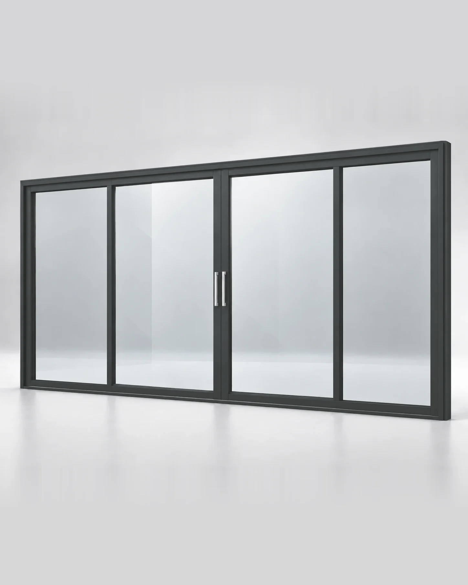
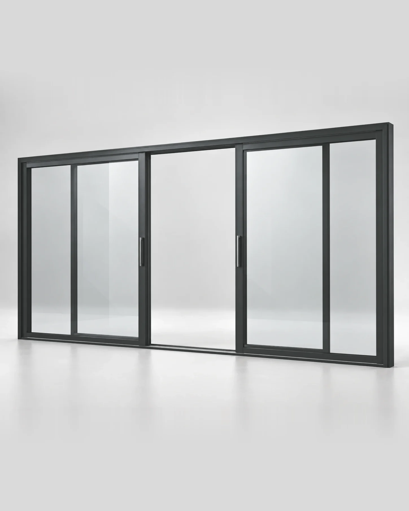

F-Center · Антрацит RAL 701601 · Конфигурация
Симметричный портал для главного фасада дома.
Четырёхсекционная конфигурация с двумя центральными активными створками. Подходит для широкого панорамного фасада и главного выхода на террасу, когда важна симметрия. Артикул фиксирует размер, цвет и схему; если архитектура требует другого решения, рассчитываем отдельную конфигурацию.
Инженерная спецификация
Поставщиков и комплектующие показываем на техническом уровне. Итоговые характеристики конкретной конструкции подтверждаются после расчёта размера и стеклопакета.
- Высота портала 1800–3700 мм
- Ширина портала 1500–19800 мм
- Створка больше 5 м² — только триплекс
02 · Под ваш проём
Другой размер или комплектация?
Посчитаем под ваш проём: калькулятор сразу покажет ориентировочную цену, а инженер после бесплатного замера — точную.
Рассчитать под свой размер →
Система внутри архитектуры
Главный фасад · большая терраса · дом с видом. Портал подбираем по проёму, планировке и маршруту движения, а не только по размеру из каталога.